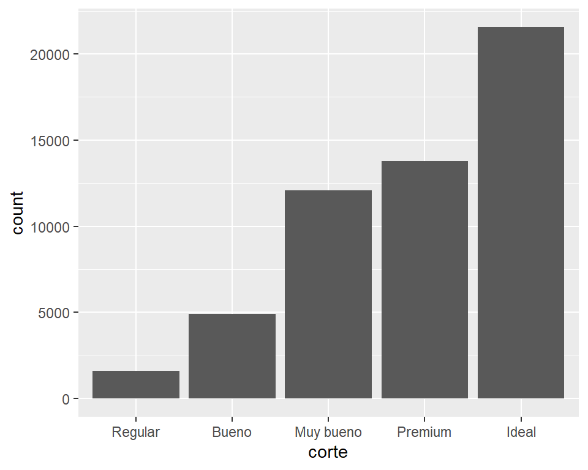
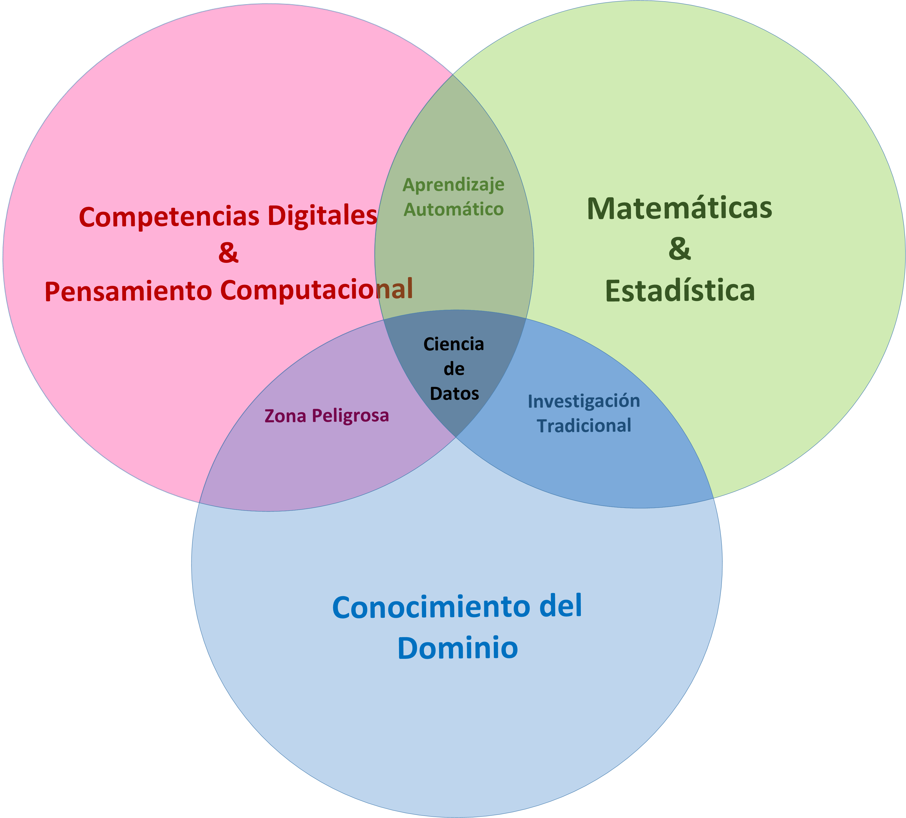
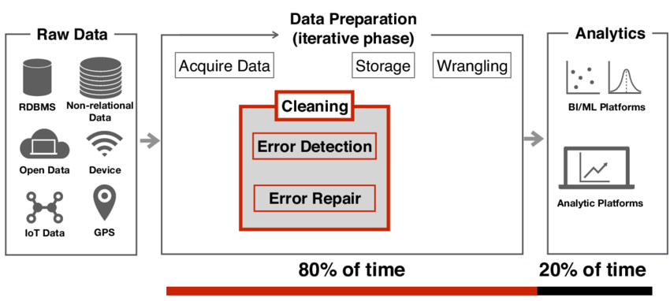
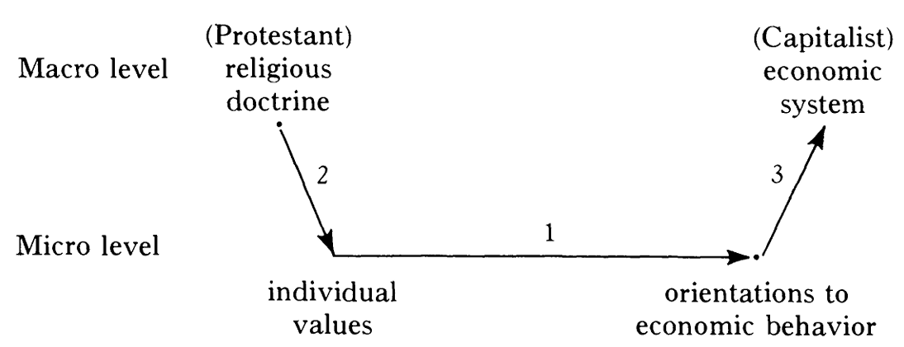
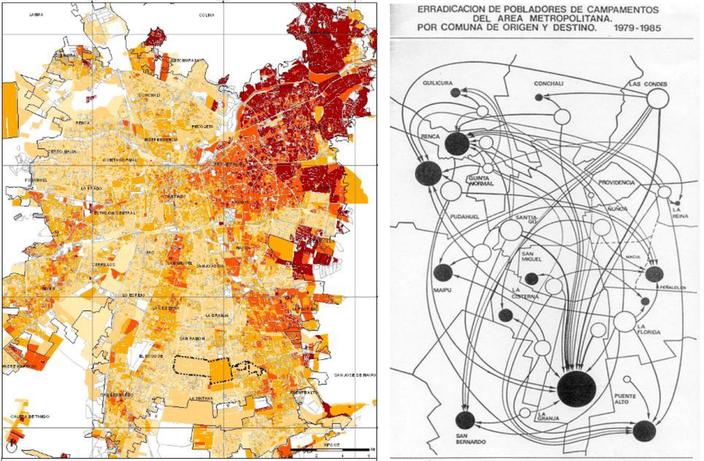
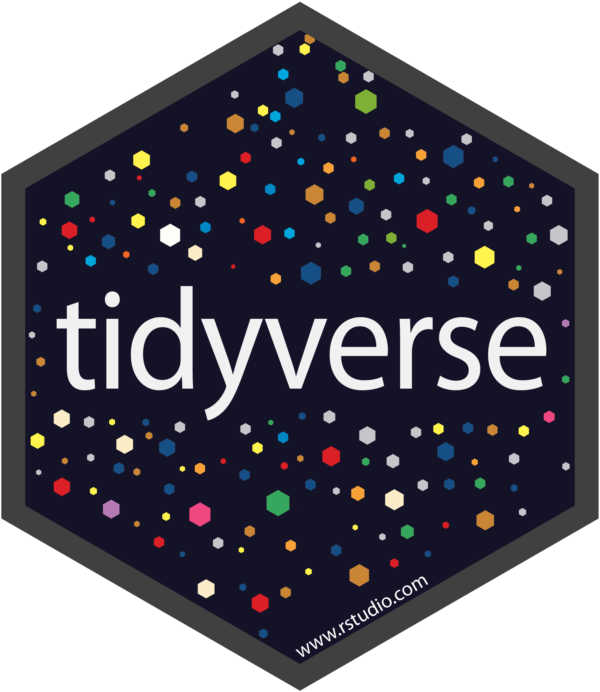
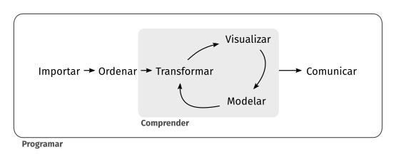
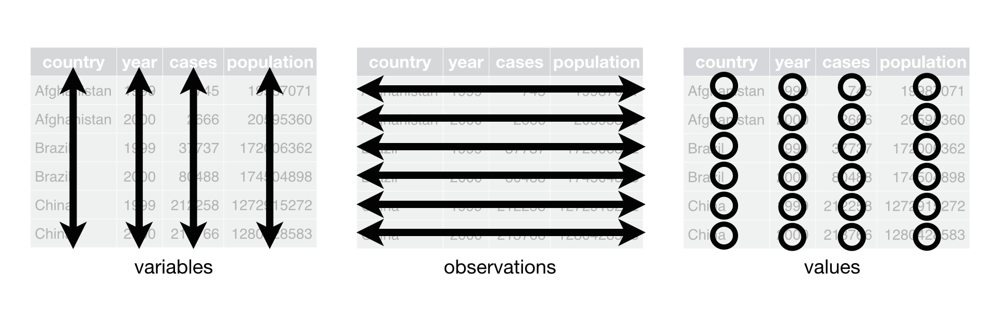
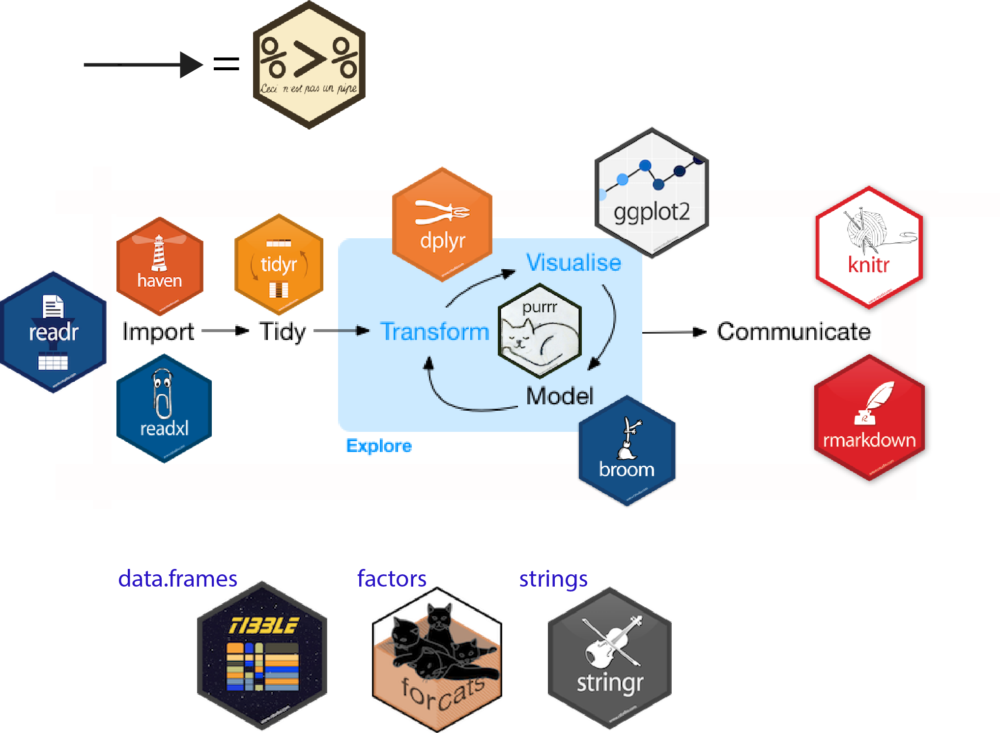
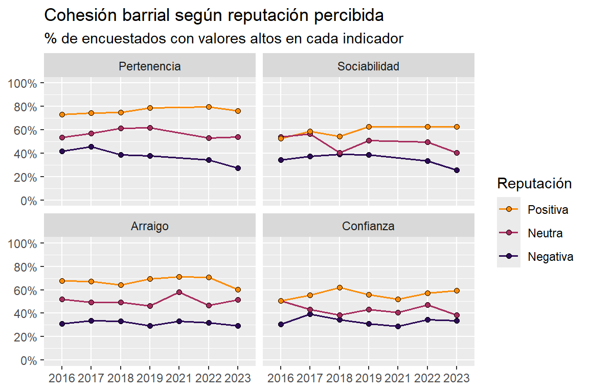

Sesión I: Introducción a la ciencia de datos y programa del curso
Nombre
Proyecto de tesis
Especialización teórica y metodológica
Experiencia previa en análisis de datos
Expectativa sobre el curso
Sesiones
12 en total entre el 14 de agosto y el 11 de diciembre
Horario original: incluye 3 bloques de 1 hora cada uno
Horario adaptado: 2 bloques
Parte teórica: entre 10:50 y 11:50
Parte práctica: entre 11:55 y 14:10
Preguntas y participación
Preguntas cortas en cualquier momento
Preguntas elaboradas en las transiciones
Asignación de décimas a quienes planteen buenas preguntas y participen
Foco del curso
Ciencia de datos aplicada a problemas reales
Comprensión del por qué y no tanto el como hacemos las cosas
Hoy es más sencillo que antes programar (IA generativa)

Transición de la era de información analógica a la digital. Dos tendencias simultaneas:
Explosión de la producción y almacenamiento de la información digital \(\to\) big data.
Crecimiento en el acceso al poder computacional \(\to\) microprocesadores (CPU)
Crecimiento del volumen de los datos + complejización de los procedimientos computacionales + dificultad del dominio en la estadística = necesidad de especialistas

La sociología genera los objetos y las preguntas de investigación, la ciencia de datos sólo es una herramienta para producir información que contribuye a dar una respuesta.
Por lo tanto, en nuestro contexto sociológico, no aspiramos a convertirnos en data scientist.
¿Cuál es el objeto de estudio de la ciencia de datos?


La ciencia de datos descubre patrones, la sociología los explica y los comprende
Es un flujo de trabajo de datos que utiliza una estructura típica que opera en base un conjunto de paquetes de R diseñados para procesar y analizar datos.
“Tidy” significa ordenado, alude a la forma que debe tener una base de datos
¿R Base v/s Tidyverse?: no es una dicotomía, son en muchos sentidos complementarios

Primero, es necesario importar los datos a R, generalmente cargándolos en un data frame.
Una vez importados, se deben ordenar, lo que significa estructurarlos de forma consistente: cada columna es una variable y cada fila una observación.
El siguiente paso es transformar los datos, es decir, filtrar, crear nuevas variables y recodificar valores. La combinación de ordenar y transformar se conoce como manejar o domar los datos (data wrangle).
Con los datos preparados, generamos conocimiento a través de la visualización y el modelado. Con la visualización descubrimos patrones inesperados y planteamos nuevas preguntas, aunque no escala bien. Con los modelos respondemos preguntas precisas y escalan eficientemente, pero se limitan a sus supuestos y no generan sorpresas.
Finalmente, la comunicación es una etapa crítica para compartir los resultados obtenidos.

Cada variable en una columna.
Cada observación/registro/individuo en una fila diferente.
Cada celda con un único valor.
Cada conjunto o unidad observacional conforma una tabla.


“Es preferible una respuesta aproximada a la pregunta correcta, que frecuentemente es formulada de manera imprecisa, que una respuesta exacta a la pregunta incorrecta, que siempre puede ser formulada de manera precisa.” — John Tukey (en Wickham & Grolemund, 2017)
El Análisis Exploratorio de Datos – EDA, por sus siglas en inglés, es un proceso de comprensión inicial de los datos.
Desde una perspectiva sustantiva, queremos interrogar los datos desde nuestras preguntas de investigación. Buscamos interar:
Generar preguntas acerca de tus datos.
Buscar respuestas visualizando, transformando y modelando tus datos.
Usar este conocimiento para refinar y/o generar nuevas preguntas
Desde una mirada estadística buscamos la varianza, en dos sentidos:
¿Qué tipo de variación existe dentro de cada una de mis variables?
¿Qué tipo de covariación ocurre entre mis diferentes variables?
library(elsoc)
library(tidyverse)
load("../0-datos/elsoc_base.RData")
# 1. Procesamiento
cob_inter_nse <- elsoc_base %>%
pivot_longer(cols = c(spbi_reco, arra_fisi, soci_reco, conf_veci)) %>%
prop(value == "Alto", by = c(ola, name, repu_terr), na.rm = TRUE) %>%
mutate(name = recode(name,
'spbi_reco' = 'Pertenencia','arra_fisi' = 'Arraigo',
'soci_reco' = 'Sociabilidad','conf_veci' = 'Confianza'),
name = factor(name, levels = c("Pertenencia", "Sociabilidad",
"Arraigo", "Confianza"))) %>%
drop_na()
# 2. Análisis
cob_inter_nse %>%
ggplot(aes(x = ola, y = prop, group = fct_rev(repu_terr),
fill = fct_rev(repu_terr))) +
geom_line(aes(color = fct_rev(repu_terr)), size = 0.7) +
geom_point(shape = 21, size = 1.8, stroke = 0.3, color = "black") +
facet_wrap(~name, ncol = 2, nrow = 2) +
scale_y_continuous(breaks = seq(0, 1, by = 0.2),
labels = scales::percent, limits = c(0, 1)) +
scale_fill_viridis_d(begin = .15, end = .75, option = "inferno", direction = -1) +
scale_color_viridis_d(begin = .15, end = .75, option = "inferno", direction = -1) +
labs(title = "Cohesión barrial según reputación percibida",
subtitle = "% de encuestados con valores altos en cada indicador",
x = NULL, y = NULL, color = "Reputación",fill = "Reputación") 
| Contenido | Aprendizajes | Evaluación |
|---|---|---|
Introducción a R y RStudio
|
El estudiante será capaz de:
|
Reporte 1: problematización (20%)
|
| Contenido | Aprendizaje | Evaluación |
|---|---|---|
Procesamiento con Tidyverse
|
El estudiante será capaz de:
|
Informe 2: resultados preliminares (40%)
|
| Contenido | Aprendizaje | Evaluación |
|---|---|---|
Visualización y reportes
|
El estudiante será capaz de:
|
Informe 3: resultados finales (40%)
|
La ciencia de datos es un campo de investigación relativamente nuevo, que se especializa en generar entendimiento de los datos a través de herramientas de programación.
El entendimiento de los datos no surge del mero ingenio, aquí está el rol de la sociología y las demás ciencias sustantivas.
La programación hoy es más fácil (sobre todo con IA generativa), lo importante es aprender por qué programar de cierta forma y los flujos de trabajo de datos consensuados por la comunidad científica.
En este curso aprenderemos el flujo de trabajo Tidyverse por su extendida documentación y simpleza; no es la única ni la mejor manera de programar, pero es de las más usadas.
Este curso está enfocado en las aplicaciones y no la ciencia de datos en sí. Resolveremos problemas prácticos a los que se enfrenta la sociología.